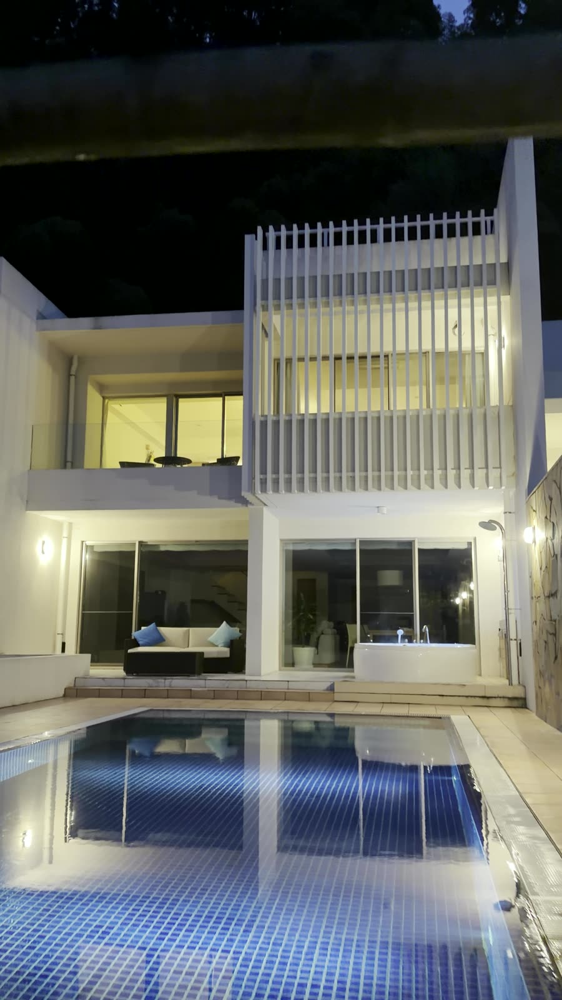
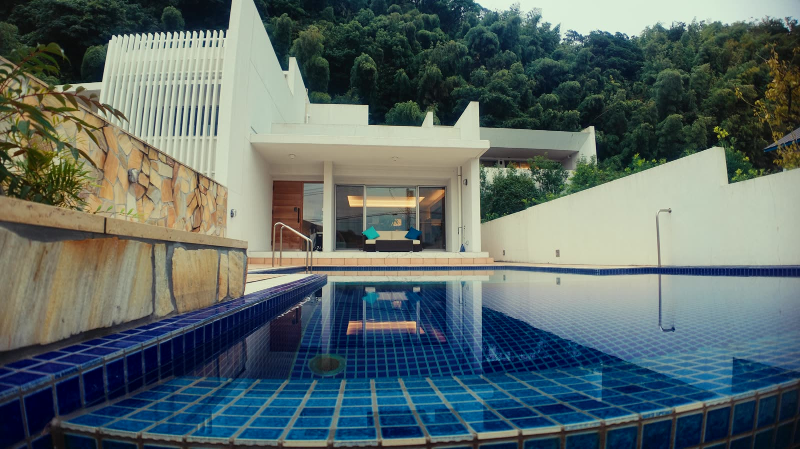
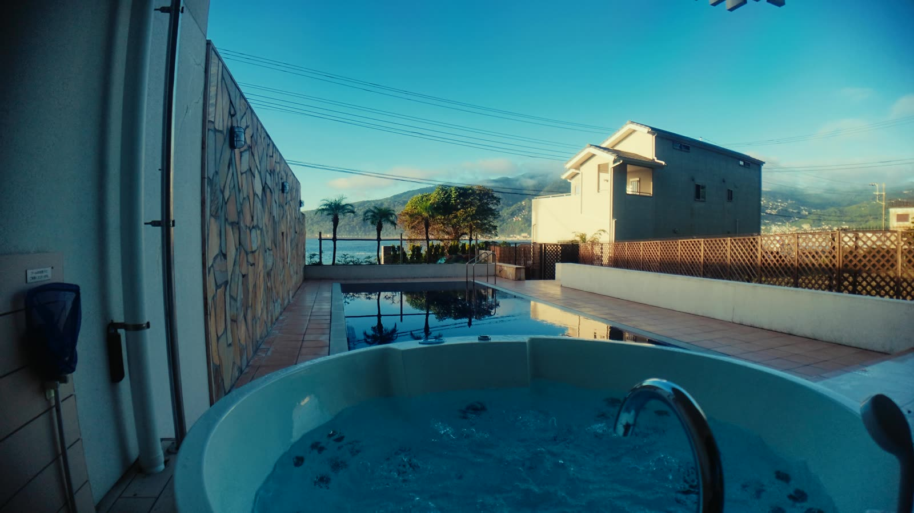
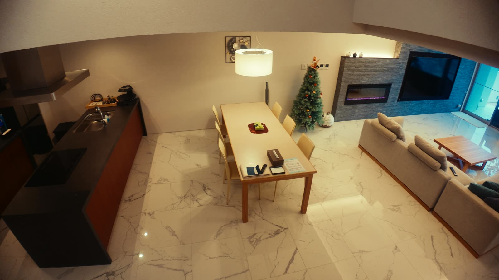
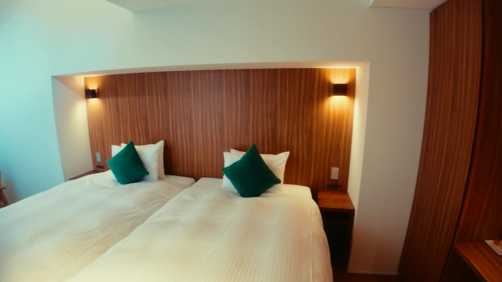
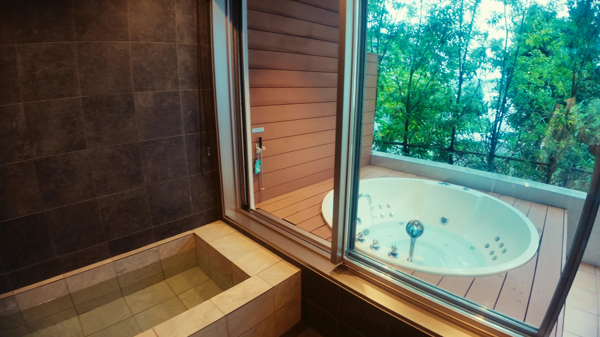
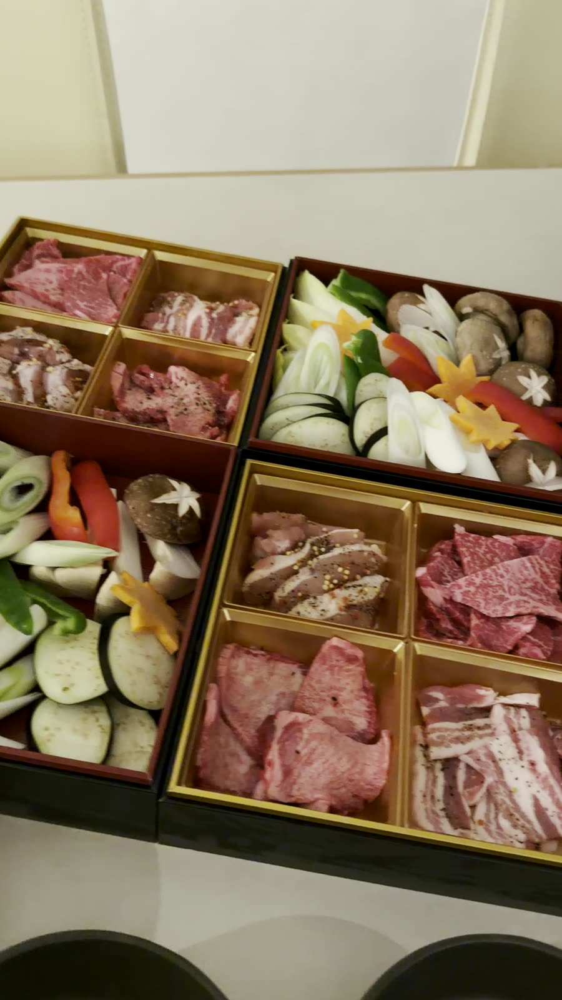
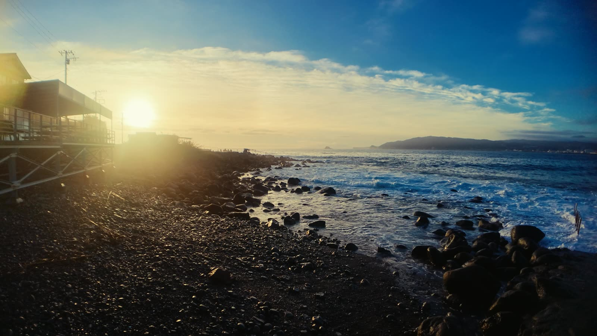

伊東の高級ヴィラ「TOKINOS」宿泊記｜プール・ジャグジー付きで非日常すぎた
静岡県伊東市にあるヴィラ「TOKINOS（トキノス）」に泊まってきました。結論から言うと、とにかく全部がラグジュアリーすぎて、ずっと非日常でした。プール、ジャグジー、どでかいリビング、寝室、お風呂、アメニティ。どこを切り取っても「ここ本当に日本？」という空間です。今回は、実際に泊まって感じたことを、撮影した写真と一緒にまとめます。

着いた瞬間から非日常。白い建物とプール
白い建物の前に、プライベートプールが広がっています。夜になるとプールと建物がライトアップされて、昼とはまったく違う雰囲気に。到着してすぐ、撮影が止まらなくなりました。

プールとジャグジー
プールの横には屋外ジャグジーもあります。昼は青空と海を眺めながら、夜はライトアップされたプールを見ながら入れるので、どの時間帯も楽しめました。
プールは温泉を使った温水プールなので、一年中入れるそうです。行くときは水着を忘れずに持っていきましょう。

どでかいリビングと暖炉
リビングは、とにかく広い。大きなソファにダイニングテーブル、アイランドキッチン、壁には暖炉まであります。大人数で泊まっても、全員でゆったり過ごせる広さでした。

寝室とお風呂
寝室は落ち着いた雰囲気で、ホテルのようにきれいに整えられています。お風呂にもジャグジーバスがあって、ここでも非日常感を味わえました。アメニティもしっかり揃っていて、手ぶらで来ても困らないレベルです。


夜はBBQとシャンパン
夜はBBQ。お肉や野菜がきれいに盛られたセットを焼きながら、シャンパンで乾杯しました。プールを眺めながらの食事は、それだけで特別な時間です。

朝は海と朝日
翌朝は、近くの海辺で朝日が見られました。プールサイドでコーヒーを飲みながら過ごす朝も最高です。

撮影するなら充電対策は必須
今回、動画だけで300本近く撮りました。撮りどころが多すぎる宿なので、モバイルバッテリーは必須です。撮影の持ち物はiPhoneで旅行動画を撮るときの持ち物にまとめています。

こんな人におすすめ
記念日や、仲間と非日常を味わいたい旅行にぴったりの宿だと思います。宿泊料金やプランは時期によって変わるので、予約サイトや公式情報で最新の内容を確認してください。